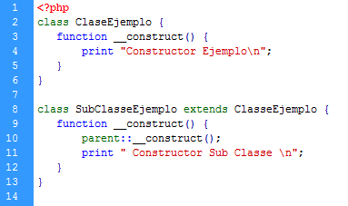
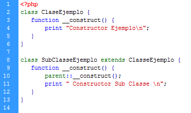

Paradigma de Programación Orientada a Objectos
Conceptos clave
- Clases
- Objeto
- Abstracción
- Encapsulamiento
- Herencia
- Polimorfismo
- Modularidad
- Interfaz
- Modificadores de Acceso
- Sobrecarga de métodos
Clase: La clase es un modelo o prototipo que define las variables y métodos comunes a todos los objetos de cierta clase. También se puede decir que una clase es una plantilla genérica para un conjunto de objetos de similares características.


Constructor: Cuando se construye un objeto es necesario inicializar sus variables con valores coherentes. Esto se hace por medio de un constructor que tiene las siguientes características: Se llama igual que la clase. No devuelve nada. Pueden existir varios, pero siguiendo las reglas de la sobrecarga de funciones. De entre los que existan, tan sólo uno se ejecutará al crear un objeto de la clase.
 

Constructor en Python y Constructor en PHP
Clase Abstracta: Este Tipo de Clases nos permiten crear "métodos generales", que recrean un comportamiento común, pero sin especificar cómo lo hacen. A nivel de código tiene por particularidad que algunos de sus métodos no tienen “cuerpo de declaración.
Interface: Una interfaz es un conjunto de métodos abstractos y de constantes cuya funcionalidad es la de determinar el funcionamiento de una clase, es decir, funciona como un molde o como una plantilla.
Clases abstractas vs Interfaces
Objeto: Los Objetos de Software, al igual que los objetos del mundo real, también tienen características y comportamientos. Un objeto de software mantiene sus características en una o más “atributos”, e implementa su comportamiento con "métodos".
Abstracción: Denota las características esenciales de un objeto, donde se capturan sus comportamientos. Además de ser clave en el proceso de análisis y diseño orientado a objetos, ya que nos permite llegar a armar un conjunto de clases que modelan la realidad o problema.

Encapsulamiento: Es el proceso de almacenar en una misma sección los elementos de una abstracción que constituyen su estructura y su comportamiento; sirve para separar el interfaz contractual de una abstracción y su implantación.
Herencia: La herencia básicamente consiste en que una clase puede heredar sus variables y métodos a varias subclases (la clase que hereda es llamada superclase o clase padre).
Polimorfismo: Son comportamientos diferentes, asociados a objetos distintos, pueden compartir el mismo nombre; al llamarlos por ese nombre se utilizará el comportamiento correspondiente al objeto que se esté usando.

Modularidad: La modularidad es la propiedad que permite dividir una aplicación en partes más pequeñas ( llamadas módulos ), cada una de las cuales debe ser tan independiente como sea posible de la aplicación en sí y de las restantes partes.
Modificadores de acceso: Son palabras claves de los lenguajes de programación orientado a objetos para configurar la accesibilidad a las clases, métodos o propiedades.
Sobrecarga de métodos: Es la definición de varios métodos con el mismo nombre pero con diferentes firmas.